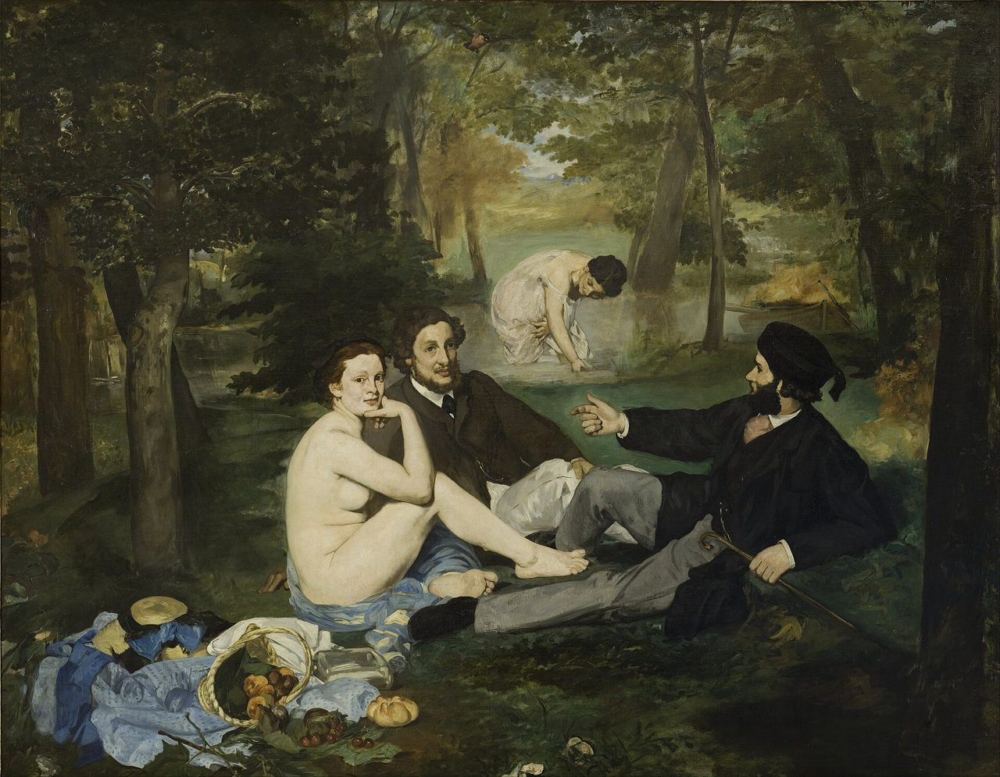

← 藝術101名畫背後的故事 EP12
草地上的午餐
馬奈・1863

被沙龍拒絕的畫，最後有了自己的展。
1863，被退件的那一年
馬奈把這幅 2 公尺多寬的大畫送進巴黎官方沙龍，被評審退件。那年落選作品太多，皇帝下令另辦「落選者沙龍」，這幅畫在那裡被圍觀、被嘲笑，最後沒賣出去。
讓人不舒服的，是「現代」
沙龍裡不缺裸女，但她們通常是女神或寓言人物。馬奈畫的是一個普通女人，旁邊坐著穿西裝的巴黎男人。她還轉過頭，直直看著你。原本的畫名叫《沐浴》（Le Bain）。
自己的展
1867 年巴黎萬國博覽會，馬奈自己出錢在會場旁蓋了展館，掛出五十多幅作品，這幅也在裡面。被拒絕之後，他選擇自己開門。
下次看到它，先看這裡
直視觀眾的裸女 轉頭直視畫外，不像沙龍裡的女神
背景洗澡的女人 比例偏大、筆觸較鬆，空間怪怪的
左下角的靜物 脫下的衣服、水果籃和圓麵包
作品資料
馬奈（Édouard Manet）
《草地上的午餐》Le Déjeuner sur l'herbe (The Luncheon on the Grass)，1863
油彩、畫布 208 × 264.5 公分
巴黎 奧賽美術館（Musée d'Orsay）
《草地上的午餐》Le Déjeuner sur l'herbe (The Luncheon on the Grass)，1863
油彩、畫布 208 × 264.5 公分
巴黎 奧賽美術館（Musée d'Orsay）